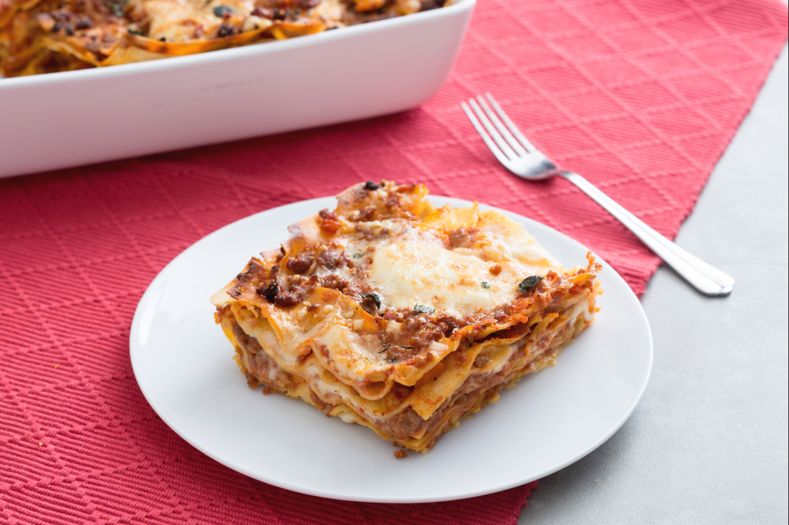

Lasagna

Lasagna with sausage ragu is a perfect first course for Sunday lunches or for important occasions.
Ragu alla bolognese is surely one of the best-loved sauces when it comes to making lasagne.
But this week, for Sunday lunch, we’ve got an ace up our sleeve.
Your friends and family will be wowed when you place a steaming pan of this lasagne with
sausage ragu on the table!
Ingredients
- Green egg lasagna sheets
- Grana Padano PDO cheese
- Whole milk
- Flour 00
- Butter
- Fine salt
- Sausage
- Tomato puree
- Celery
- Onions
- Carrots
- Red wine
- Extra virgin oil
Steps
- Peel the carrot, onion, and celery and chop them
- Add a couple of tablespoons of olive oil to a frying pan
- Add the chopped vegetables and brown over high heat for at least 5 minutes
- Add the sausage without the skin
- Pour the red wine and simmer until it evaporates
- Add the tomato puree and salt
- Cover the pan with a lid and cook for 10 minutes
- In an another pan prepare the béchamel sauce
- When the ragu is ready assemble the lasagne
- Bake in a preheated to 220°C oven for 20 minutes
- Switch to broil mode at the highest setting and cook for 3 minutes
- Your delicious lasagna is ready